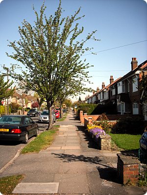
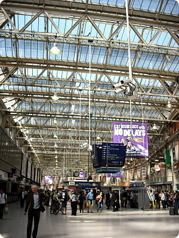
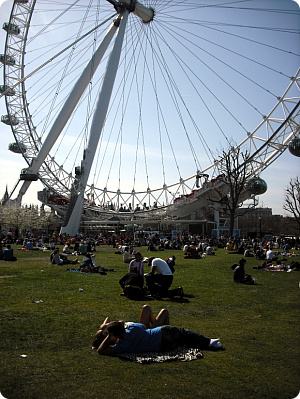
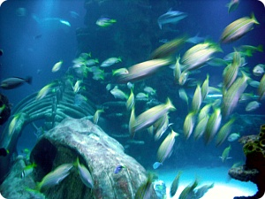

토요일
피크닉가기 딱 좋은날씨 +_+
M군이랑 저번에 못간 아쿠아리움 댕겨왔다.

연말에 눈이 쌓인 동네거리를 사진으로 찍었는데
이제 날씨 따닷해져서
선글라스끼고 가디건만 걸치고 외출이라니 허헛;;
시간 너무빨라 ;ㅂ;
+버스/지하철 30분이상 이동을할 경우
반드시 손에 커피가 들려있어야 해서;;;;
역 바로옆에 있는 서브웨이 단골이 되었는데;;
드디어 점원이 날 알아보고 내가 들어가면 주문하기전에
알아서 커피를 내어주는 상황이 되었다;;
전에 Maidstone에서 Nero댕길때의 기억이;;;;
(서브웨이가서 샌드위치는 안사고 커피'만' 사는애로 찍혔나;;)
어김없이 들어가서 커피주문을 했는데
이날은 다른직원이었음;;;
"Regular Latte" 라고 말하자마자
주방쪽에서 항상 주문받던 알바생이 낼름 나오더니
"나 넌줄 알았어!! 커피주문하길래 너 확인하러 나왔지!!"
이러는거임............OTL
"오늘은 왜 늦었냐? 너 맨날 아침에 사가잖아" 라길래
"오늘은 토요일이잖아 -_-;;" 라고 대답해주었음;;
여.....여튼 커피홀짝이믄서 워털루로 고고;;;

워털루역 근처는 나랑 별 인연이 없었는데
요즘 줄기차게 다니는중;;;

잔디밭에 사람들 다 자리깔고 피크닉중
얘네들 날씨좋은날이 정말 궁하긴 궁하구나;;
라는걸 새삼 깨달았음;;;;
심지어 비키니입고 누워있는 언니도봤다//ㅂ//(←왜좋아하는거냐;;)
M&S서 샐러드랑 과일사서
잔디밭에 앉아서 먹으면서 사람구경했음 ㅋㅋㅋ
광합성좀 하다가 바로 아쿠아리움으로~

꼬맹이들 사이를 헤치며
신나게 아쿠아리움 구경 ㅋㅋㅋㅋ
둘다 저번에 못간게 한(?)이었는지
이번에 인터넷으로 티켓출력해와서 들어가믄서 계속
Finally~Finally~!!!를 외쳤다능;;;;
워우 이게 얼마만의 수족관이냐;;;
열심히 사진을 찍었지만 죄다 저모냥......OTL
그나마 저게 잘 나온편임;;; 난글렀어;;;;
피크닉&BBQ시즌이 돌아왔군요~ㅎㅎㅎㅎ